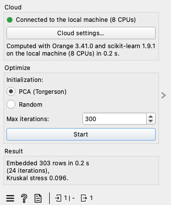

Multidimensional scaling of a cloud table's rows, or of distances kept on the machine, into two dimensions. View the map with Cloud Scatter Plot.

Like every Cloud widget, it has a Cloud box at the top: whether a machine is connected, Cloud settings… and Stop machine, and what the last job ran with, how long it took and what it cost. See Cloud widgets.
The options are those of Orange's MDS: the initialization (PCA, which is Torgerson's classical MDS, or random) and the maximum iterations. From a table, the machine first computes Euclidean distances as Orange's MDS does. With both inputs, the distances are embedded and the table must have as many rows. New inputs start the optimization; after you change an option, click Start.
MDS needs about six n × n matrices of memory (20,000 rows: about 18 GB) and runs mostly on one core, so a bigger machine doesn't make it faster. The widget checks the machine's memory first and warns before a run that may take more than a minute.